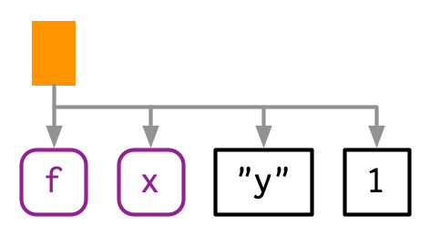
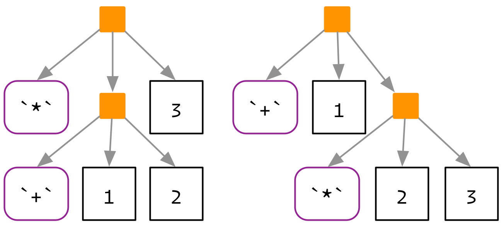

17 Expressions
17.1 Introduction
To compute on the language, we first need to understand its structure. That requires some new vocabulary, some new tools, and some new ways of thinking about R code. The first thing you’ll need to understand is the distinction between an operation and its result. Take this code, which takes a variable x, multiplies it by 10, and saves the result to a new variable called y. It doesn’t work because we haven’t defined a variable called x:
It would be nice if we could capture the intent of the code, without executing the code. In other words, how can we separate our description of the action from performing it? One way is to use rlang::expr():
expr() returns a quoted expression: the R code that captures our intent. We’ll com back to discussion expr() in depth in Section 18.3. In this chapter, you’ll learn about the underlying data structure, which will also help you understand how R executes code. Later, in Section 19.2, you’ll learn about eval() which allows you to take such an expression and perform, or evaluate, it:
Outline
Prerequisites
You’ll need the rlang package to capture and compute on expressions, and the lobstr package to visualise them.
17.2 Abstract syntax trees
Quoted expressions are also called abstract syntax trees (ASTs) because the structure of code is hierarchical and can be naturally represented as a tree. To make that more obvious we’re going to introduce some graphical conventions, illustrated with the very simple call f(x, "y", 1).

Function calls define the hierarchy of the tree. Calls are shown with an orange square. The first child (
f) is the function that gets called; the second and subsequent children (x,"y", and1) are the arguments.NB: Unlike many trees the order of the children is important:
f(x, 1)is not the same asf(1, x).The leaves of the tree are either symbols, like
fandx, or constants like1or"y". Symbols have a purple border and rounded corners. Constants, which are atomic vectors of length one, have black borders and square corners. Strings are always surrounded in quotes to emphasise their difference from symbols — more on that later.
Drawing these diagrams by hand takes me some time, and obviously you can’t rely on me to draw diagrams for your own code. I’ll supplement the hand-drawn trees with trees drawn by lobstr::ast(). ast() tries to make trees as similar as possible to my hand-drawn trees, while respecting the limitations of the console. Let’s use ast() to display the tree above:
Calls get an orange square, symbols are bold and purple, and strings are surrounded by quote marks. (The colours are not shown in the book, but you’ll see it if you run the code yourself.)
ast() supports “unquoting” with !! (pronounced bang-bang). We’ll talk about unquoting in detail in the next chapter; for now note that you’ll need it if you want to see the structure of an expression that you’ve already captured with expr().
x <- expr(f(x, "y", 1))
# not useful!
lobstr::ast(x)
#> x
# what we want
lobstr::ast(!!x)
#> █─f
#> ├─x
#> ├─"y"
#> └─1For more complex code, you can also use RStudio’s tree viewer to explore the AST interactively, e.g. View(expr(y <- x * 10)).
17.2.1 Infix vs. prefix calls
Every call in R can be written in tree form, even if it doesn’t look like it at first glance. Take y <- x * 10 again: what are the functions that are being called? It is not as easy to spot as f(x, 1) because this expression contains two calls in infix form: <- and *. Infix functions come inbetween their arguments (so an infix function can only have two arguments), whereas most functions in R are prefix functions where the name of the function comes first.51
As discussed in Section 5.8.1, any call can be converted to prefix form. That means that these two lines of code are equivalent:
And they have this AST:

You might remember that code like names(x) <- y ends up calling the names<- function. That is not reflected in the parse tree because the translation needs to happen at run-time, not parse-time, due to the complexities of nested assignments like names(x)[2] <- "z".
It’s informative to look at the ASTs for other special forms
lobstr::ast(function(x, y) {
if (x > y) {
x
} else {
y
}
})
#> █─`function`
#> ├─█─x = ``
#> │ └─y = ``
#> ├─█─`{`
#> │ └─█─`if`
#> │ ├─█─`>`
#> │ │ ├─x
#> │ │ └─y
#> │ ├─█─`{`
#> │ │ └─x
#> │ └─█─`{`
#> │ └─y
#> └─<inline srcref>Note that functions include a node <inline srcref>, this contains the source code of the function, as described in Section 5.2.2.
17.2.2 Function factories
Another small detail we need to consider are calls like f()(). The first component of the call is usually a symbol:
But if you are using a function factory (Chapter 10), a function that returns another function, the first component might be another call:
And of course that function might also take arguments:
These forms are relatively rare, but it’s good to be able to recognise them when they crop up.
17.2.3 Argument names
So far the examples have only used unnamed arguments. Named arguments don’t change the parsing rules, but just add some additional metadata:
lobstr::ast(mean(x = mtcars$cyl, na.rm = TRUE))
#> █─mean
#> ├─x = █─`$`
#> │ ├─mtcars
#> │ └─cyl
#> └─na.rm = TRUE(Note the appearance of another infix function: $)
17.2.4 Exercises
Use
ast()and experimentation to figure out the three arguments toif. What would you call them? Which arguments are required and which are optional?What does the call tree of an
ifstatement with multipleelse ifconditions look like? Why?What are the arguments to the
for()andwhile()calls?Two arithmetic operators can be used in both prefix and infix style. What are they?
17.3 R’s grammar
The process by which a computer language takes a sequence of tokens (like x, +, y) and constructs a tree is called parsing, and it is governed by a set of rules known as a grammar. In this section, we’ll use lobstr::ast() to explore some of the details of R’s grammar.
If this is your first reading of the metaprogramming chapters, now is a good time to read the first sections of the next two chapters in order to get the big picture. Come back and learn more of the details once you’ve seen how all the big pieces fit together.
17.3.1 Operator precedence
Infix functions introduce ambiguity in a way that prefix functions do not. The parser has to resolve two sources of ambiguity when parsing infix operators52. First, what does 1 + 2 * 3 yield? Do you get 9 (i.e. (1 + 2) * 3), or 7 (i.e. 1 + (2 * 3))? Which of the two possible parse trees below does R use?

Programming languages use conventions called operator precedence to resolve this ambiguity. We can use ast() to see what R does:
Predicting the precedence of arithmetic operations is usually easy because it’s drilled into you in school and is consistent across the vast majority of programming languages. Predicting the precedence of other operators is harder. There’s one particularly surprising case in R: ! has a much lower precedence (i.e. it binds less tightly) than you might expect. This allows you to write useful operations like:
R has over 30 infix operators divided into 18 precedence groups. While the details are described in ?Syntax, very few people have memorised the complete ordering. Indeed, if there’s any confusion, use parentheses! These also appear in the AST, like all other special forms:
17.3.2 Associativity
Another source of ambiguity is introduced by repeated usage of the same infix function. For example, is 1 + 2 + 3 equivalent to (1 + 2) + 3 or to 1 + (2 + 3)? This normally doesn’t matter because x + (y + z) == (x + y) + z, i.e. addition is associative, but is needed because some S3 classes define + in a non-associative way. For example, ggplot2 overloads + to build up a complex plot from simple pieces; this usage is non-associative because earlier layers are drawn underneath later layers.
In R, most operators are left-associative, i.e. the operations on the left are evaluated first:
There are two exceptions: exponentiation and assignment.
17.3.3 Whitespace
R, in general, is not sensitive to white space. Most white space is not significant and is not recorded in the AST (this is one reason that it’s abstract). For example, x+y yields exactly the same AST as x + y, and means that you’re generally free to add whitespace to enhance the readability of your code. There’s one major exception:
17.3.4 Exercises
R uses parentheses in two slightly different ways as illustrated by these two calls:
Compare and contrast the two uses by referencing the AST.
=can also be used in two ways. Construct a simple example that shows both uses.What does
!1 + !1return? Why?Why does
x1 <- x2 <- x3 <- 0work? Describe the two reasons.Compare the ASTs of
x + y %+% zandx ^ y %+% z. What have you learned about the precedence of custom infix functions?
17.4 Data structures
Now that you have a good feel for ASTs and how R’s grammar helps to define them, it’s time to learn about the underlying implementation. In this section you’ll learn more about the data structures that appear in the AST:
- Constants and symbols form the leaves of the tree.
- Calls form the branches of the tree.
- Pairlists are a largely historical data structure that are now only used for function arguments.
17.4.1 Definitions
Before we continue, a word of caution about definitions. this book. Because base R evolved organically, it does not have a set of definitions that are used consistently throughout the documetnation. The biggest source of confusion is the use of the term “expression” to mean two different things:
The set of base types created by parsing code, i.e. constants, symbols, calls, and pairlists.
The objects created by
expression()(andparse()).
In this book, I adopt the convention of the R language definition (R Core Team 2018b) and call the first category expressions, and the second category expression objects. In function documentation, expression can mean either. You’ll need to figure out which it is by carefully inspecting the context.
There are two other common sources of confusion in base R documentation:
typeof()andstr()print “language” for calls, butis.language()returnsTRUEfor calls, symbols, and expression objects.Symbol and name are used interchangeably (i.e.
is.name()is identical tois.symbol()). I prefer symbol because “name” has other common meanings (e.g. the name of a variable).
17.4.2 Constants
Constants occurred in the leaves of the AST. They are the simplest data structure found in the AST because they are atomic vectors of length 1. Constants are “self-quoting” in the sense that the expression used to represent a constant is the constant itself:
identical(expr(TRUE), TRUE)
#> [1] TRUE
identical(expr(1), 1)
#> [1] TRUE
identical(expr(2L), 2L)
#> [1] TRUE
identical(expr("x"), "x")
#> [1] TRUESee Section (scalars) for the conventions for defining these constants.
17.4.3 Symbols
Symbols represent variable names. They are basically a string stored in a special way. You can convert back and forth between symbols and the strings that represent them with rlang::sym() and rlang::as_string():
Symbols are scalars: if you want multiple symbols, you’ll need to put them in a list. This is what syms() does:
The big difference between strings and symbols is what happens when you evaluate them: evaluating a string returns the string; evaluating a symbol returns the value associated with the symbol in the current environment.
There’s one special symbol that needs a little extra discussion: the empty symbol, which is used to represent missing arguments (not missing values!). You can make it with missing_arg() (or expr()):
And see if you have a missing symbol with rlang::is_missing():
This symbol has a peculiar property: if you bind it to a variable, then access that variable, you will get an error:
m1 <- missing_arg()
m1
#> Error in eval(expr, envir, enclos):
#> argument "m1" is missing, with no defaultBut you won’t get an error if it’s stored inside another data structure!
This is the magic that makes missing arguments work in functions. If you do need to work with a missing argument stored in a variable, you can use rlang::maybe_missing():
That prevents the error from occurring and instead returns another empty symbol.
You only need to care about the missing symbol if you’re programmatically creating functions with missing arguments; we’ll come back to that in the next chapter.
17.4.4 Calls
Calls define the tree in AST. A call behaves similarly to a list:
- It has a
length(). - You can extract elements with
[[,[, and$. - Calls can contain other calls.
The main difference is that the first element of a call is special: it’s the function that will get called. Let’s explore these ideas with a simple example:
x <- expr(read.table("important.csv", row = FALSE))
lobstr::ast(!!x)
#> █─read.table
#> ├─"important.csv"
#> └─row = FALSEThe length of a call minus one gives the number of arguments:
The names of a call are empty, except for named arguments:
You can extract the leaves of the call by position and by name using [[ and $ in the usual way:
Extracting specific arguments from calls is challenging because of R’s flexible rules for argument matching: it could potentially be in any location, with the full name, with an abbreviated name, or with no name. To work around this problem, you can use rlang::call_standardise() which standardises all arguments to use the full name:
(Note that if the function uses ... it’s not possible to standardise all arguments.)
You can use [ to extract multiple components, but if you drop the first element, you’re going to end up with a weird call:
If you do want to extract multiple elements in this way, it’s good practice to coerce the results to a list:
Calls can be modified in the same way as lists:
You can construct a call from its children by using rlang::call2(). The first argument should be the function to be called (supplied either as a string or a symbol), and the subsequent arguments are the call to that function:
17.4.5 Pairlists
There is one data structure we need to discuss for completeness: the pairlist. Pairlists are a remnant of R’s past and have been replaced by lists almost everywhere. The only place you are likely to see pairlists in R53 is when working with function arguments:
Fortunately, whenever you encounter a pairlist, you can treat it just like a regular list:
However, behind the scenes pairlists are implemented using a different data structure, a linked list instead of a vector. That means that subsetting is slower with pairlists, and gets slower the further along the pairlist you index because it’s \(O(n)\) rather than \(O(1)\). This has little impact in practice.
17.4.6 Expression objects
Finally, we need to briefly discuss the expression object. Expression objects are produced by only two base functions: expression() and parse():
exp1 <- parse(text = c("
x <- 4
x
"))
exp2 <- expression(x <- 4, x)
typeof(exp1)
#> [1] "expression"
typeof(exp2)
#> [1] "expression"
exp1
#> expression(x <- 4, x)
exp2
#> expression(x <- 4, x)Like calls and pairlists, expression objects behave like a list:
Conceptually, an expression object is just a list of expressions. The only difference is that calling eval() on an expression evaluates each individual expression. We don’t believe this advantage merits introducing a new data structure, so instead of expression objects we always use regular lists of expressions.
17.4.7 Exercises
Which two of the six types of atomic vector can’t appear in an expression? Why? Why can’t you create an expression that contains an atomic vector of length greater than one?
How is
rlang::maybe_missing()implemented? Why does it work?Describe the differences between the following calls?
rlang::call_standardise()doesn’t work so well for the following calls. Why? What makesmean()special?Why does this code not make sense?
Construct the expression
if(x > 1) "a" else "b"using multiple calls tocall2(). How does the code structure reflect the structure of the AST?
17.5 Parsing and deparsing
Most of the time you type code into the console, and R takes care of turning the characters you’ve typed into an AST. But occasionally you have code stored in a string, and you want to parse it yourself. You can do so using rlang::parse_expr():
x1 <- "y <- x + 10"
lobstr::ast(!!x1)
#> "y <- x + 10"
x2 <- rlang::parse_expr(x1)
x2
#> y <- x + 10
lobstr::ast(!!x2)
#> █─`<-`
#> ├─y
#> └─█─`+`
#> ├─x
#> └─10If you have multiple expressions in a string, you’ll need to use rlang::parse_exprs(). It returns a list of expressions:
If you find yourself working with strings containing code very frequently, you should reconsider your process. Read the Chapter 18 and consider if you can instead more safely generate expressions using quasiquotation.
The base equivalent to parse_exprs() is parse(). It is a little harder to use because it’s specialised for parsing R code stored in files. That means you need supply your string to the text argument, and you get back an expression object:
The opposite of parsing is deparsing: you have an AST and you want a string that would generate it when parsed:
Parsing and deparsing are not perfectly symmetric because parsing throws away all information not directly related to the AST. This includes backticks around ordinary names, comments, and whitespace:
There are a few other cases where parsing and deparsing is not symmetric. We’ll encounter one in the next chapter:
Deparsing is often used to provide default names for data structures (like data frames), and default labels for messages or other output. rlang provides two helpers for those situations:
Be careful when using the base R equivalent, deparse(): it returns a character vector with one element for each line. Whenever you use it, remember that the length of the output might be greater than one, and plan accordingly.
17.5.1 Exercises
What happens if you attempt to parse an invalid expression? e.g.
"a +"or"f())".deparse()produces vectors when the input is long. For example, the following call produces a vector of length two:expr <- expr(g(a + b + c + d + e + f + g + h + i + j + k + l + m + n + o + p + q + r + s + t + u + v + w + x + y + z)) deparse(expr)What do
expr_text(),expr_name(), andexpr_label()do with this input?Why does
as.Date.default()usesubstitute()anddeparse()? Why doespairwise.t.test()use them? Read the source code.pairwise.t.test()assumes thatdeparse()always returns a length one character vector. Can you construct an input that violates this expectation? What happens?
17.6 Case study: Walking the AST with recursive functions
To conclude the chapter I’m going to pull together everything that you’ve learned about ASTs and use that knowledge to solve more complicated problems. The inspiration comes from the base codetools package, which provides two interesting functions:
findGlobals()locates all global variables used by a function. This can be useful if you want to check that your function doesn’t inadvertently rely on variables defined in their parent environment.checkUsage()checks for a range of common problems including unused local variables, unused parameters, and the use of partial argument matching.
Getting all of the details of these functions correct is fiddly, so we won’t explore their full expression. Instead we’ll focus on the big underlying idea: recursion on the AST. Recursive functions are a natural fit to tree-like data structures because a recursive function is made up of two parts that correspond to the two parts of the tree:
The recursive case handles the nodes in the tree. Typically, you’ll do something to each child of node, usually calling the recursive function again, and then combine the results back together again. For expressions, you’ll need to handle calls and pairlists (function arguments).
The base case handles the leaves of the tree. The base cases ensure that the function eventually terminates, by solving the simplest cases directly. For expressions, you need to handle symbols and constants in the base case.
To make this pattern easier to see, we’ll need two helper functions. First we define expr_type() which will return “constant” for constant, “symbol” for symbols, “call”, for calls, “pairlist” for pairlists, and the “type” of anything else:
expr_type <- function(x) {
if (rlang::is_syntactic_literal(x)) {
"constant"
} else if (is.symbol(x)) {
"symbol"
} else if (is.call(x)) {
"call"
} else if (is.pairlist(x)) {
"pairlist"
} else {
typeof(x)
}
}
expr_type(expr("a"))
#> [1] "constant"
expr_type(expr(f(1, 2)))
#> [1] "call"We’ll couple this with a wrapper around the switch function:
switch_expr <- function(x, ...) {
switch(expr_type(x),
...,
stop("Don't know how to handle type ", typeof(x), call. = FALSE)
)
}With these two functions in hand, the basic template for any function that walks the AST is as follows:
recurse_call <- function(x) {
switch_expr(x,
# Base cases
symbol = ,
constant = ,
# Recursive cases
call = ,
pairlist =
)
}Typically, solving the base case is easy, so we’ll do that first, then check the results. The recursive cases are a little more tricky. Typically you’ll think about the structure of final output and then find the correct purrr function to produce it. To that end, make sure you’re familiar with Functionals before continuing.
17.6.1 Finding F and T
We’ll start simple with a function that determines whether a function uses the logical abbreviations T and F: it will return TRUE if it finds a logical abbreviation, and FALSE otherwise. Using T and F is generally considered to be poor coding practice, and is something that R CMD check will warn about.
Let’s first compare the AST for T vs. TRUE:
TRUE is parsed as a logical vector of length one, while T is parsed as a name. This tells us how to write our base cases for the recursive function: a constant is never a logical abbreviation, and a symbol is an abbreviation if it’s “F” or “T”:
logical_abbr_rec <- function(x) {
switch_expr(x,
constant = FALSE,
symbol = as_string(x) %in% c("F", "T")
)
}
logical_abbr_rec(expr(TRUE))
#> [1] FALSE
logical_abbr_rec(expr(T))
#> [1] TRUEI’ve written logical_abbr_rec() function assuming that the input will be an expression as this will make the recursive operation simpler. However, when writing a recursive function it’s common to write a wrapper that provides defaults or makes the function a little easier to use. Here we’ll typically make a wrapper that quotes its input (we’ll learn more about that in the next chapter), so we don’t need to use expr() every time.
logical_abbr <- function(x) {
logical_abbr_rec(enexpr(x))
}
logical_abbr(T)
#> [1] TRUE
logical_abbr(FALSE)
#> [1] FALSENext we need to implement the recursive cases. Here it’s simple because we want to do the same thing for calls and for pairlists: recursively apply the function to each subcomponent, and return TRUE if any subcomponent contains a logical abbreviation. This is made easy by purrr::some(), which iterates over a list and returns TRUE if the predicate function is true for any element.
17.6.2 Finding all variables created by assignment
logical_abbr() is very simple: it only returns a single TRUE or FALSE. The next task, listing all variables created by assignment, is a little more complicated. We’ll start simply, and then make the function progressively more rigorous.
We start by looking at the AST for assignment:
Assignment is a call where the first element is the symbol <-, the second is the name of variable, and the third is the value to be assigned.
Next, we need to decide what data structure we’re going to use for the results. Here I think it will be easiest if we return a character vector. If we return symbols, we’ll need to use a list() and that makes things a little more complicated.
With that in hand we can start by implementing the base cases and providing a helpful wrapper around the recursive function. The base cases here are really simple!
find_assign_rec <- function(x) {
switch_expr(x,
constant = ,
symbol = character()
)
}
find_assign <- function(x) find_assign_rec(enexpr(x))
find_assign("x")
#> character(0)
find_assign(x)
#> character(0)Next we implement the recursive cases. This is made easier by a function that should exist in purrr, but currently doesn’t. flat_map_chr() expects .f to return a character vector of arbitrary length, and flattens all results into a single character vector.
flat_map_chr <- function(.x, .f, ...) {
purrr::flatten_chr(purrr::map(.x, .f, ...))
}
flat_map_chr(letters[1:3], ~ rep(., sample(3, 1)))
#> [1] "a" "a" "b" "b" "b" "c" "c" "c"The recursive case for pairlists is simple: we iterate over every element of the pairlist (i.e. each function argument) and combine the results. The case for calls is a little bit more complex - if this is a call to <- then we should return the second element of the call:
find_assign_rec <- function(x) {
switch_expr(x,
# Base cases
constant = ,
symbol = character(),
# Recursive cases
pairlist = flat_map_chr(as.list(x), find_assign_rec),
call = {
if (is_call(x, "<-")) {
as_string(x[[2]])
} else {
flat_map_chr(as.list(x), find_assign_rec)
}
}
)
}
find_assign(a <- 1)
#> [1] "a"
find_assign({
a <- 1
{
b <- 2
}
})
#> [1] "a" "b"Now we need to make our function more robust by coming up with examples intended to break it. What happens when we assign to the same variable multiple times?
It’s easiest to fix this at the level of the wrapper function:
find_assign <- function(x) unique(find_assign_rec(enexpr(x)))
find_assign({
a <- 1
a <- 2
})
#> [1] "a"What happens if we have nested calls to <-? Currently we only return the first. That’s because when <- occurs we immediately terminate recursion.
Instead we need to take a more rigorous approach. I think it’s best to keep the recursive function focused on the tree structure, so I’m going to extract out find_assign_call() into a separate function.
find_assign_call <- function(x) {
if (is_call(x, "<-") && is_symbol(x[[2]])) {
lhs <- as_string(x[[2]])
children <- as.list(x)[-1]
} else {
lhs <- character()
children <- as.list(x)
}
c(lhs, flat_map_chr(children, find_assign_rec))
}
find_assign_rec <- function(x) {
switch_expr(x,
# Base cases
constant = ,
symbol = character(),
# Recursive cases
pairlist = flat_map_chr(x, find_assign_rec),
call = find_assign_call(x)
)
}
find_assign(a <- b <- c <- 1)
#> [1] "a" "b" "c"
find_assign(system.time(x <- print(y <- 5)))
#> [1] "x" "y"While the complete version of this function is quite complicated, it’s important to remember we wrote it by working our way up by writing simple component parts.
17.6.3 Exercises
logical_abbr()returnsTRUEforT(1, 2, 3). How could you modifylogical_abbr_rec()so that it ignores function calls that useTorF?logical_abbr()works with expressions. It currently fails when you give it a function. Why not? How could you modifylogical_abbr()to make it work? What components of a function will you need to recurse over?Modify find assignment to also detect assignment using replacement functions, i.e.
names(x) <- y.Write a function that extracts all calls to a specified function.
References
R Core Team. 2018b. R Language Definition. Vienna, Austria: R Foundation for Statistical Computing. https://cran.r-project.org/doc/manuals/r-release/R-lang.html.
Some programming languages use postfix calls where the name of the function comes last. If you ever used an old HP calculator, you might have fallen in love with reverse Polish notation, postfix notation for algebra. There is also a family of “stack”-based programming languages descending from Forth which takes this idea as far as it might possibly go.↩
These two sources of ambiguity do not exist without infix operators, which can be considered an advantage of purely prefix and postfix languages. It’s interesting to compare a simple arithmetic operation in Lisp (prefix) and Forth (postfix). In Lisp you’d write
(+ (+ 1 2) 3)); this avoids ambiguity by requiring parentheses everywhere. In Forth, you’d write1 2 + 3 +; this doesn’t require any parentheses, but does require more thought when reading.↩If you’re working in C, you’ll encounter pairlists more often. For example, calls are also implemented using pairlists.↩